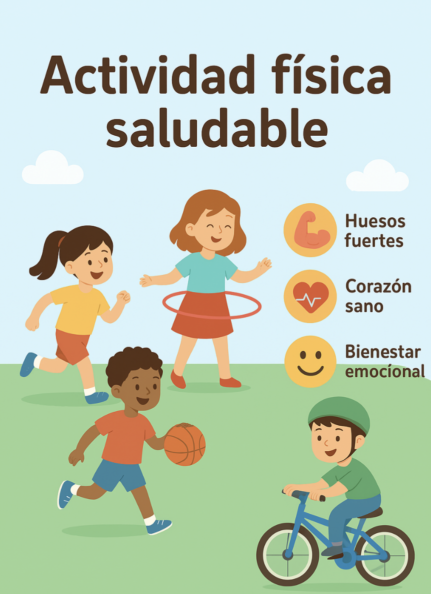

Tu Salud Importa
4.2 Actividad física
Actividad Física
¿Qué es la actividad física?
Es cualquier movimiento del cuerpo que hace trabajar nuestros músculos y que gasta energía.
No es solo hacer deporte: también caminar, bailar, correr, jugar al aire libre o montar en bici cuentan.
¿Qué beneficios nos aporta la actividad física?:
🏃 Fortalece los huesos y músculos.
❤️ Cuida el corazón y la circulación.
🙂 Mejora el estado de ánimo y reduce el estrés.
💤 Ayuda a dormir mejor.
🧠 Favorece la concentración y el aprendizaje.
👥 Fomenta la convivencia y el trabajo en equipo.
Recomendaciones para niños y niñas de tu edad:
- Realizar al menos 60 minutos de actividad física al día.
- Combinar ejercicios aeróbicos (correr, saltar, nadar, montar en bici) con ejercicios de fuerza (trepar, juegos de arrastre, escalada).
- Reducir el tiempo frente a pantallas.
- Buscar actividades divertidas y variadas.

Demuestra lo que sabes.
Aquí tienes una serie de preguntas sobre la ACTIVIDAD FÍSICA. Debes de contestar en todas ellas verdadero o falso. Presta atención y seguro que consigues un alto porcentaje de aciertos.
¡¡¡Mucho ánimo!!!
Tema: Actividad física y salud — 6º de PrimariaJuego: Verdadero o Falso
Obra publicada con Licencia Creative Commons Reconocimiento Compartir igual 4.0